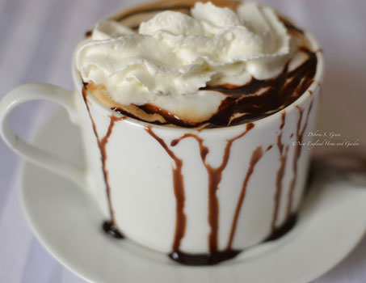
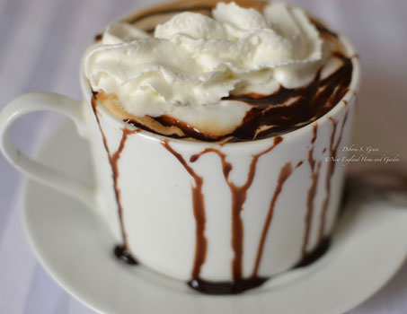

 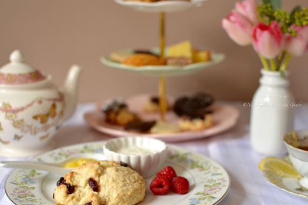
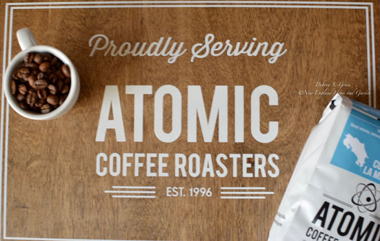
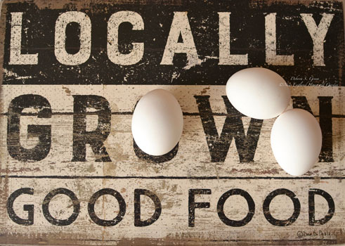
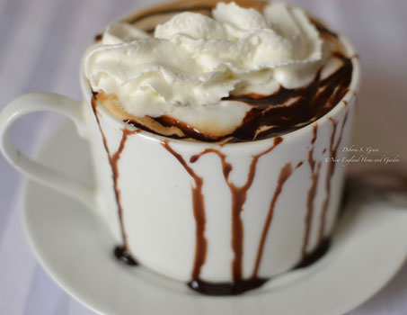
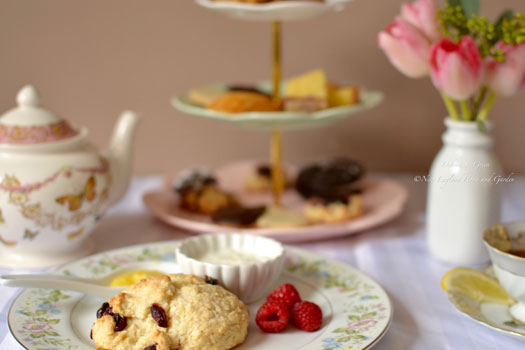
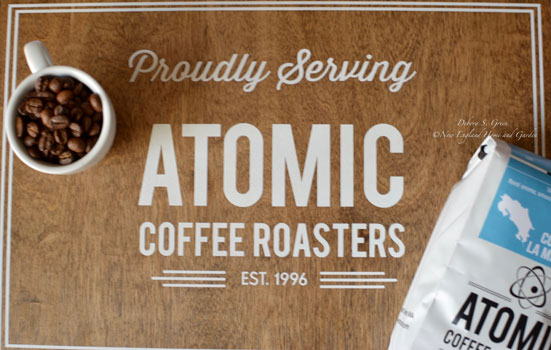
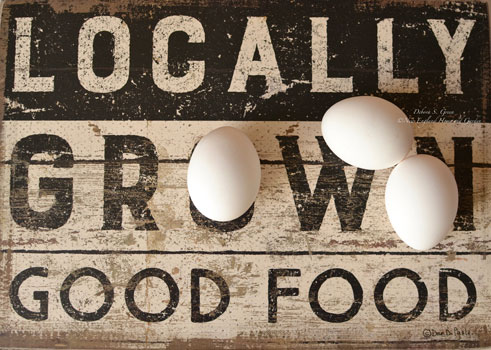
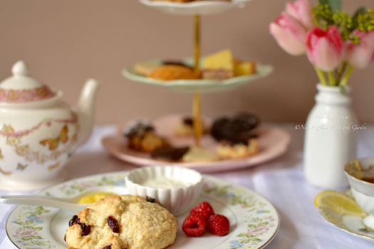
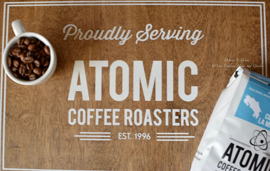
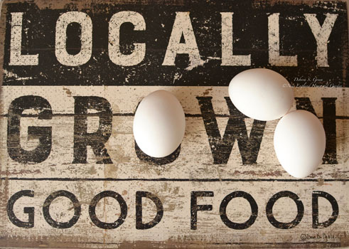
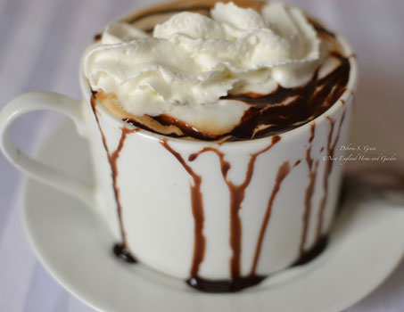
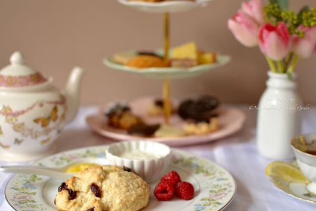
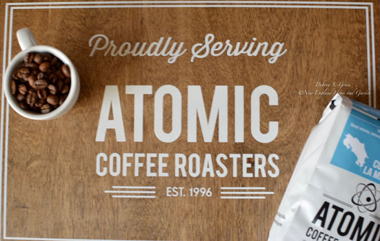
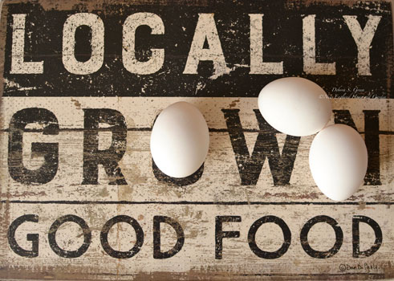
“Bring to the table a delicious breakfast or lunch made with local ingredients & love straight from the kitchen.”
Check out our special Cozy Afternoon Teas happening in this season Saturdays at noon!
Click below to call and make a reservation! 1-978-965-5102
The Green Apple Café is a full service restaurant and is open Wednesday through Sunday from 7:00 AM to 1 PM. We serve breakfast all day and lunch beginning at 11:00 AM. We offer take-out meals, fair trade coffee and specialty drinks, gluten free and vegetarian options. We also have Afternoon Tea monthly, catering service, and can host functions in our dining room after 1:00 PM. Host your next Bridal Shower, Tea, or Baby Shower here!

We now offer online ordering with delivery via Door Dash Storefront and are currently open for take out, indoor and outdoor seating is available on our front porch and on out back. We look forward to seeing you soon!